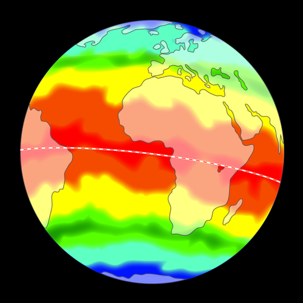

In Graad 6 het die leerders werk behandel wat verduidelik hoe die draaiing van die Aarde om sy eie as dag en nag veroorsaak. Hulle het ook geleer dat die Aarde om die Son wentel, en elke jaar een omwenteling voltooi. Ons begin hierdie hoofstuk deur hierdie werk te hersien voordat ons aangaan en na sonenergie en die Aarde se seisoene kyk. Die hoofdoel van hierdie hoofstuk is om seker te maak dat leerders die volgende verstaan:
Dit neem die Aarde een jaar om om die Son te wentel.
Die Aarde se as is gekantel relatief tot die vlak van sy wentelbaan om die Son.
Hierdie kanteling van die Aarde is verantwoordelik vir die seisoene soos die Aarde om die Son wentel.
Die Son verskaf die energie wat alle lewe op Aarde onderhou.
Leerders sukkel dikwels om te onderskei tussen die woorde wentel en roteer, en verwar die twee terme. As jy vind dat leerders hiermee sukkel, help dit soms om die woord 'wentel' te vervang met 'draai om' sodat leerders die konsep verstaan en nie deur semantiek verwar word nie. Ons gebruik hier wentel en roteer, soos vereis deur die KABV, maar jy kan dit stadiger bekendstel as jy vind dat die woorde jou leerders verhinder om die konsep te verstaan.
Dit is belangrik om enige wanbegrippe wat leerders oor die oorsaak van die seisoene het uit die weg te ruim. Sommige algemene wanbegrippe word in afdeling 1.1 geïdentifiseer en verduidelik.
Aan die einde van afdeling 1.1 is daar 'n onderafdeling wat Seisoene op ander planete behandel. Dit is ingesluit as 'n interessante en uitdagende uitbreiding. Hierdie afdeling kan egter verwarring veroorsaak as leerders nie heeltemal verstaan waarom seisoene op Aarde voorkom nie, daarom moet jy nie probeer om dit in te sluit as jy twyfel oor leerders se begrip van die voorafgaande werk nie. Hierdie afdeling is egter nuttig aangesien dit leerders help om die kennis wat hulle oor die Aarde ingewin het op die ander planete toe te pas, en leerders 'n begrip van die Aarde se plek in ons sonnestelsel gee.
Konsepkaarte: Die konsepkaarte in hierdie werkboeke is geskep met behulp van 'n oopbronprogram genaamd CMapTools. Jy kan dit deur hierdie skakel aflaai as jy dit wil gebruik om jou eie konsepkaarte te skep. bit.ly/1fMyJsQ
Dink jy dit is belangrik om leerders sterrekunde op skool te leer? Lees hierdie interessante en insiggewende artikel wat die voordele en toepassings van sterrekunde verduidelik. bit.ly/17iVgpw
1.1 Sonenergie en die Aarde se seisoene? (7 uur)
Take
Vaardighede
Aanbeveling
Aktiwiteit: Hersieningsoefening oor dag en nag
Opnoem, onthou
Opsionele hersiening
Aktiwiteit: Beweging van 'n klaskamerson
Ondersoek, neem waar, analiseer
Voorgestel
Aktiwiteit: Dag en nag
Ondersoek, neem waar, analiseer
KABV-voorstel
Aktiwiteit: In watter rigting draai die Aarde?
Waarneem, analiseer
Uitbreiding
Aktiwiteit: Gee die Aarde byskrifte
Identifiseer
KABV-voorstel
Aktiwiteit: Wat veroorsaak die seisoene? Raaiskote.
Lys
Opsioneel
Aktiwiteit: Die kanteling van die Aarde
Ondersoek, neem waar, analiseer
Voorgestel
Aktiwiteit: Direkte en indirekte lig
Werk in pare, ondersoek, neem waar, analiseer, evalueer
KABV-voorstel
Ondersoek: Direkte en indirekte lig en die effek daarvan op temperatuur
Ondersoek, neem waar, meet, teken op, analiseer
Voorgestel
Aktiwiteit: Kyk hoe sonlig die Aarde tref
Waarneem, analiseer
KABV-voorstel
Aktiwiteit: Opsomming van die Aarde se seisoene
Herroep, som op
Opsioneel
1.2 Sonenergie en lewe op Aarde (1 uur)
Take
Vaardighede
Aanbeveling
Aktiwiteit: Vang die Son se energie vas
Skryf, interpreteer, gee menings
Voorgestel
Aktiwiteit: Wat gebeur as die Son ophou skyn?
Toepassing, sintese
Opsionele uitbreiding
1.3 Opgebergde sonenergie (4 uur)
Take
Vaardighede
Aanbeveling
Aktiwiteit: Gaan terug in tyd
Herroep, luistervaardighede, begrip
Opsioneel
Aktiwiteit: Vloeidiagram van steenkoolvorming
Skryf, sorteer inligting, vertaal inligting
KABV-voorstel
Aktiwiteit: Die vorming van steenkool
Vertaal inligting, begrip
KABV-voorstel
Aktiwiteit: Verduidelik die vloei van energie
Toepassing, sintese, begrip
KABV-voorstel
Ondersoek: Die gebruik van fossielbrandstowwe in my huis
Samel data in, doen verslag oor bevindings
Voorgestel
(Hierdie kan as 'n moontlike projek gebruik word)
Die Son is ons naaste ster. Dit is 'n groot bal baie warm gas in die ruimte wat hitte en lig in alle rigtings uitstraal. Al die planete, insluitend ons tuiste, die Aarde, beweeg in wentelbane om die Son. Soos ons in hierdie hoofstuk sal sien, is die Son ongelooflik belangrik: dit voorsien lig en hitte, en sy skynbare beweging deur ons hemelruim veroorsaak dag en nag en die verloop van die seisoene.
Dit is nie korrek om te sê die Son 'brand' nie. Die Son 'brand' nie soos 'n vuur nie. Onthou, 'n vuur wat op Aarde brand, benodig suurstof, en daar is geen suurstof in die ruimte nie. Die gas is eerder baie warm en gloei as gevolg daarvan.
Ons Son.
Sonenergie en die Aarde se seisoene
sfeer
as
rotasie
omwenteling
dag
wentelbaan
Die rotasie van die Aarde
Kom ons begin deur te kyk wat jy kan onthou van wat jy oor dag en nag in Graad 6 geleer het.
Hersieningsoefening oor dag en nag
INSTRUKSIES:
Beantwoord die vrae in die tabel hieronder.
VRAE:
In watter rigting moet jy kyk om die Son te sien opkom?
In watter rigting moet jy kyk om die Son te sien ondergaan?
Hoe laat is die Son op sy hoogste punt in die lug?
Teen middernag, waar is die Son relatief tot jou posisie op die Aarde?
Hoe lank neem dit die Aarde om een rotasie om sy eie as te voltooi?
In watter rigting moet jy kyk om die Son te sien opkom?
Oos
In watter rigting moet jy kyk om die Son te sien ondergaan?
Wes
Hoe laat is die Son op sy hoogste punt in die lug?
Twaalfuur die middag
Teen middernag, waar is die Son relatief tot jou posisie op die Aarde?
Direk teenooroorgesteld aan jou posisie, aan die ander kant van die aardbol
Hoe lank neem dit die Aarde om een rotasie om sy eie as te voltooi?
24 uur (1 dag)
Verskillende planete neem verskillende tye om een rotasie om hulle eie as te voltooi en het dus verskillende daglengtes. Venus is die stadigste roteerder van al die planete in ons sonnestelsel en neem 243 Aarddae om een rotasie te voltooi. 'n Venusdag is langer as 200 dae op Aarde!
As jy gedurende die dag die Son se pad deur die lug volg, sal jy sien dat dit in die ooste opkom en in die weste sak. Die Son bereik sy hoogste punt teen twaalfuur die middag. Waarom dink jy lyk dit asof die Son deur die lug beweeg gedurende die dag?
Die Son is op verskillende posisies in die lug gedurende die dag. Maar is dit die Son wat beweeg?
Kom ons doen 'n aktiwiteit om uit te vind!
Beweging van 'n klaskamerson
Dit is 'n aktiewe groepaktiwiteit vir die hele klas. Maak seker dat alle leerders die ballon of bal wat jy gebruik duidelik kan sien. Die leerders gaan opstaan en in die rondte draai. Maak dus seker dat hulle genoeg plek het om te draai sonder om mekaar te stamp of oor hulle stoele te val. As daar te min plek is, is dit dalk 'n goeie idee om die stoele opmekaar te stapel tydens die aktiwiteit, of andersins kan so tien leerders op 'n keer opstaan en beweeg. Dan kan hulle weer gaan sit en die volgende tien kan 'n beurt kry.
Maak seker dat leerders die verskil ken tussen om kloksgewys en antikloksgewys te draai voordat hulle die aktiwiteit doen.
MATERIALE:
geel, ronde ballon of bal wat van die plafon gehang kan word
tou om die bal of ballon op te hang
INSTRUKSIES:
Hang die ballon of bal met behulp van die tou van die plafon naby een van die hoeke van die klaskamer. Maak seker dat die ballon/bal hoog genoeg is om van agter in die klaskamer sigbaar te wees. Die ballon/bal stel die Son voor.
Staan in die klaskamer met jou gesig na die ballon/bal toe.
Hou jou kop stil en draai nou stadig op die plek in 'n kloksgewyse rigting, totdat jy twee of drie draaie voltooi het.
Herhaal die aktiwiteit, maar draai hierdie keer antikloksgewys.
VRAE:
In watter rigting het dit gelyk asof die ballon/bal beweeg toe jy kloksgewys gedraai het?
Van regs na links.
In watter rigting het dit gelyk asof die ballon/bal beweeg toe jy antikloksgewys gedraai het?
Van links na regs.
Het die hangende Son regtig beweeg?
Nee dit het op een plek gehang.
Waarom, dink jy, sien ons die Son deur die lug beweeg?
Dit lyk uit ons perspektief asof die Son beweeg, maar eintlik beweeg ons. Die Aarde draai om sy eie as en dit lyk asof die Son in die teenoorgestelde rigting as ons draaiing beweeg.
Soos jy kan sien, beweeg die hangende Son nie regtig nie, dit lyk net asof dit beweeg omdat jy draai. Dit is ook waar vir die regte Son in die lug. Die Son beweeg nie regtig nie, dit lyk net asof dit beweeg omdat die Aarde om sy as draai. Dit is dus die Aarde se rotasie wat die skynbare beweging van die Son deur die lug gedurende die dag veroorsaak.
Video van die Aarde wat om sy eie as draai en dag en nag veroorsaak. bit.ly/1h8mMeM
Dag en nag
Dit is 'n aktiewe groepaktiwiteit vir die hele klas. Maak seker dat al die leerders die ballon of bal wat jy gebruik duidelik kan sien. Hulle moet om die aardbol loop, so maak seker dat daar genoeg plek is om dit te doen. Maak ook seker dat die lamp of flits wat jy gebruik die hele een helfte van die aardbol verlig. As slegs 'n klein deeltjie van die aardbol verlig is, skuif die lamp verder weg en gebruik 'n sterker ligbron, indien nodig.
MATERIALE:
'n aardbol (of 'n bal/ballon waarop die vorms van die kontinente geteken is) wat van die plafon gehang kan word
tou om die aardbol mee op te hang
nie-permanente merkpen of plakker
leeslamp of flits
swart vullissakke of gordyne om die kamer te verdonker
INSTRUKSIES:
As jy nie 'n aardbol het nie, kan jy self 'n model van die Aarde in die klas maak. Gebruik enige bal. Teken die ewenaar en merk die Noord- en Suidpool.
Merk jou posisie op die aardbol met 'n kol/plakker.
Hang die aardbol van die plafon naby die middel van die klas. Dit moet omtrent op ooghoogte wees. Die aardbol stel die Aarde voor.
Maak die kamer donker.
Skyn met 'n leeslamp of flits op die aardbol aan Afrika se kant en hou die lamp/flits stil in daardie posisie. Die flits stel die Son voor.
Loop om die aardbol sodat jy die hele aardbol kan sien. Verlig die flits alles? Hoeveel is verlig en hoeveel is donker?
Die helfte van die aardbol is verlig en die helfte is donker.
Die verligte deel stel dag voor en die donker deel nag. Is jou kol/plakker in die dag of in die nag?
Die kol is in die dag aangesien dit na die lamp toe wys.
Draai nou die aardbol antikloksgewys, 'n halwe draai. Is jou kol/plakker in die dag of in die nag?
Die kol is nou in die nag aangesien dit weg van die lamp wys.
Waar is dit nou dag?
Leerder-afhanklike antwoord. Aanvaar enige antwoord waar daar lig op die aardbol skyn (dus op die helfte van die aardbol wat nou na die lamp toe wys).
Hou aan om die aardbol antikloksgewys te draai totdat jou kol/plakker weer terug op sy oorspronklike plek is en weer verlig is. Hoe lank sal dit op die regte Aarde vir die kol neem om een so 'n rotasie te voltooi?
24 uur, of een dag.
So, nou kan jy sien hoe die Aarde se rotasie om sy eie as dag en nag veroorsaak. Wanneer die Son een helfte van die Aarde verlig, is die ander helfte in die donker. Dit is dag in die verligte helfte en nag in die donker helfte. Soos die Aarde draai, beweeg jy van lig na donker en weer terug na die lig deur die loop van een dag (24 uur).
In die nag kan jy nie die Son deur die lug sien beweeg nie, maar as jy mooi kyk sal jy opmerk dat die sterre deur die lug beweeg, net soos die Son. Dit neem 24 uur vir die Aarde om een keer om sy eie as te draai (genoem 'n rotasie), dus is 'n Aarddag 24 uur lank.
Hierdie foto van die SALT-teleskoop naby Sutherland is in die nag geneem met die kamerasluiter oop gelaat. Jy kan die sterrespore as gevolg van die Aarde se rotasie sien.
Jy weet nou dat die Aarde om sy eie as draai en een rotasie elke 24 uur voltooi. In watter rigting draai dit? Kom ons kyk of jy dit kan uitpluis.
Hierdie aktiwiteit is 'n bietjie moeiliker. Maak seker dat alle leerders die ballon of bal wat jy gebruik duidelik kan sien. Die leerders gaan opstaan en in die rondte draai. Maak dus seker dat hulle genoeg plek het om te draai sonder om mekaar te stamp of oor hulle stoele te val. As daar te min plek is, is dit dalk 'n goeie idee om die stoele opmekaar te stapel tydens die aktiwiteit. Maak seker dat die leerders die verskil ken tussen kloksgewys en antikloksgewys voordat hulle die aktiwiteit doen.
MATERIALE:
'n bal of ballon
tou om die bal mee op te hang
INSTRUKSIES:
Hang die ballon of bal met behulp van die tou van die plafon naby een van die hoeke van die klaskamer. Maak seker dat die ballon/bal hoog genoeg is om van agter in die klaskamer sigbaar te wees. Die ballon/bal stel die Son voor.
Staan in die klaskamer met jou gesig na die ballon/bal toe.
Hou jou kop stil en draai nou stadig op die plek in 'n kloksgewyse rigting, totdat jy twee of drie draaie voltooi het. Draai jy links- of regsom? Let op wat met die hangende ballon of bal gebeur.
Jy draai regsom. Dit lyk asof die bal van regs na links beweeg.
Herhaal nou die aktiwiteit, maar draai hierdie keer antikloksgewys. Draai jy links- of regsom? Let op wat met die hangende ballon of bal gebeur.
Jy draai linksom. Dit lyk asof die bal van links na regs beweeg.
Wat let jy op oor die rigting waarin jy draai (links of regs) en die rigting waarin dit lyk of die hangende Son beweeg?
Die rigtings is teenoorgesteld aan mekaar.
In watter rigting lyk dit of die Son deur die lug beweeg, van oos na wes of van wes na oos? In watter rigting dink jy draai die Aarde regtig as jy na jou antwoord op vraag 5 kyk?
Dit lyk of die Son van oos na wes beweeg. Die Aarde beweeg dus regtig van wes na oos.
Kyk na die foto hieronder wat die Aarde uit die ruimte wys. Gebruik jou antwoord op vraag 6 en sê of die Aarde kloksgewys of antikloksgewys draai? Teken die rigting op die foto hieronder.
Antikloksgewys (soos vanaf die Noordpool gesien).
Hierdie kleurprent wys Noord- en Suid-Amerika (groen en bruin kontinente) soos hulle uit die ruimte sou lyk.
Die enigste planeet wat soos 'n vaatjie op sy sy roteer, is Uranus. Die enigste planeet wat agteruit roteer relatief tot die ander is Venus.
Die omwenteling van die Aarde
Die Aarde wentel in 'n byna perfekte sirkel om die Son, en voltooi een omwenteling om die Son per jaar (of 365¼) dae om presies te wees). Terwyl die Aarde om die Son wentel, roteer (draai) dit ook terselfdertyd om sy eie as.
Verduidelik in jou eie woorde wat bedoel word met die Aarde se rotasie.
Dit is die draaiing van die Aarde om sy eie as. Hierdie as word die rotasie-as genoem.
Verduidelik in jou eie woorde wat bedoel word as ons praat van die Aarde se rotasie of draaiing.
Dit verwys na die Aarde se reis om die Son in sy wentelbaan. Een volledige wentelbaan word 'n omwenteling genoem.
Verskillende planete neem verskillende tye om een volledige omwenteling om die Son te voltooi en dus het hulle jare verskillende lengtes. Die planete verder weg van die Son sal groter wentelbane hê, soos in die diagram gewys word, en neem dus langer om om die Son te wentel.
Ons sonnestelsel.
Mercurius het 'n jaar van slegs 88 Aarddae, en Neptunus het 'n jaar van 164 Aardjare.
Waarom het ons seisoene?
sonenergie
intensiteit
skuins
direk
indirek
ewenaar
dag-en-nagewening
halfrond
kanteling
seisoen
sonstilstand
'n Goeie manier om die konsep van seisoene bekend te stel is om leerders die vier tradisionele seisoene (lente, somer, herfs en winter) te laat identifiseer. Vra hulle om die verskille in weer en omgewing gedurende die vier seisoene te beskryf en vra hulle oor die verskillende aktiwiteite wat hulle graag in verskillende seisoene doen (byvoorbeeld om in die somer strand toe te gaan). Jy kan hulle dan vra hoe lank elke seisoen min of meer duur en watter tyd van die jaar elke seisoen voorkom. In 'n land so groot soos Suid-Afrika varieer die klimaat aansienlik van plek tot plek en terwyl dit byvoorbeeld in Pretoria lenteweer is, kan dit steeds yskoud in die Oos-Kaap wees. Hou dus in gedagte dat die vier seisoene (elk drie maande lank) hoofsaaklik vir gematigde gebiede gedefinieer is, en dat die weer wat in die "lente" verwag word (matig!) dalk nie presies ooreenstem met die weer wat op 'n gegewe oomblik op 'n gegewe plek in Suid-Afrika beleef word nie. Die besprekings in die
hoofstuk word dus so algemeen moontlik gehou en fokus op gemiddelde temperature in die somer en winter vir die Noordelike en Suidelike halfrond.
Voordat die oorsake van die seisoene op Aarde ondersoek word, kan jy die leerders vra wat hulle dink die seisoene veroorsaak en al die antwoorde op die skryfbord lys. Miskien kan die klas stem vir elke rede. Nadat die aktiwiteite in afdeling 1.1 gedoen is, moet jy die leerders vra om weer te stem. Dit is belangrik dat enige wanbegrippe wat leerders mag hê oor die oorsaak van die seisoene aangespreek moet word. Van die algemene wanbegrippe word in die onderwysersnotas in afdeling 1.1 verduidelik.
Soos wat die Aarde om die Son beweeg, ontvang dit sonenergie in die vorm van lig en hitte wat deur die Son uitgestraal word. Onthou jy dat ons verlede kwartaal, in Energie en Verandering, gepraat het oor hoe hitte van die Son deur die ruimte na die Aarde oorgedra word? Wat word dit genoem?
Straling.
Die hoeveelheid sonenergie wat die Aarde ontvang, word insolasie genoem. Dit kom van die woorde: inkomendesonstraling
Insolasie moet nie met isolasie verwar word nie.
Ons kan ons sterre dank vir ons Son! As die Aarde nie energie van die Son ontvang het nie, sou dit 'n koue, lewelose plek gewees het. Het jy opgelet dat die gemiddelde temperatuur nie dieselfde is oor die loop van die jaar nie? Ons ondervind mos seisoene: winter, lente, somer en herfs. Dit is gewoonlik veel warmer in die somer en kouer in die winter. Hoekom dink jy is dit so?
Leerders sal waarskynlik talle verskillende antwoorde hê. Aanvaar al die antwoorde en doen dan die aktiwiteite in die hoofstuk om die ware oorsaak vir die seisoene te ondersoek.
Kom ons maak eers seker dat ons van die terminologie oor die Aarde ken voordat ons aangaan.
Gee die Aarde byskrifte
Bring, indien moontlik, 'n paar lemoene klas toe en laat die leerders die verskillende breedtegrade met 'n permanente merkpen daarop teken, en die Noord- en Suidpool en Noordelike en Suidelike Halfrond merk.
INSTRUKSIES:
Gebruik die woordbank en gee die diagram van die Aarde hieronder byskrifte.
Woordbank:
Noordelike Halfrond
Suidelike Halfrond
Ewenaar
Noordpool
Suidpool
Hier is die diagram met byskrifte:
Jy het dalk reeds 'n paar idees oor hoekom ons verskillende seisoene deur die jaar kry.
Wat veroorsaak die seisoene? Raaiskote!
INSTRUKSIES:
Watter van die stellings in die tabel dink jy is waar en watter is onwaar? Skryf jou antwoord in die regterkantste kolom.
Stelling
Waar of Onwaar
Ons beleef winter omdat die Son in die winter minder energie uitstraal.
Ons beleef somer omdat ons in die somer nader aan die Son is.
As dit winter is in die Noordelike Halfrond is dit ook winter in die Suidelike Halfrond.
Die dae is langer in die somer omdat die Aarde in die somermaande stadiger draai.
Stelling
Waar of Onwaar
Ons beleef winter omdat die Son in die winter minder energie uitstraal.
Onwaar
Ons beleef somer omdat ons in die somer nader aan die Son is.
Onwaar
As dit winter is in die Noordelike Halfrond is dit ook winter in die Suidelike Halfrond.
Onwaar
Die dae is langer in die somer omdat die Aarde in die somermaande stadiger draai.
Onwaar
AL die stellings in die "Wat veroorsaak die seisoene?"-aktiwiteit is onwaar! Die hoeveelheid energie wat die Son uitstraal bly die hele jaar dieselfde. Die Aarde draai ook die hele jaar ewe vinnig om sy eie as. Wanneer dit somer is in Kaapstad, is dit winter in Parys in Frankryk, en wanneer dit lente is in Londen, is dit herfs in Suid-Afrika. Die seisoene is teenoorgesteld in die Noordelike en Suidelike Halfronde. As dit terselfdertyd winter en somer op verskillende plekke op Aarde kan wees, kan die seisoene nie deur ons afstand vanaf die Son veroorsaak word nie. As dit die geval sou wees, sou die hele Aarde op dieselfde tyd winter en somer gehad het.
Twee algemene wanbegrippe oor die seisoene waarop gelet moet word terwyl hierdie inhoud met leerders behandel word:
1. Seisoene word veroorsaak deurdat die Aarde in die somer nader aan die Son is as in die winter, omdat sy wentelbaan ovaal is.
NEE: IN WERKLIKHEID is die Aarde se wentelbaan om die Son ellipties, maar dit is byna 'n perfekte sirkel; dit verskil net met 4%. Sterrekundiges het die verskil in inkomende sonenergie wat daaruit volg, bereken: dit is slegs 7%, wat baie klein is en nie genoeg is om die variasie in temperatuur wat met die seisoene gepaardgaan te veroorsaak nie. Indien hierdie verskil in afstand verantwoordelik sou wees vir die seisoene, dan
sou die Suidelike en Noordelike Halfrond gelyktydig somer en winter beleef het, wat nie die geval is nie.
2. Die Aarde se kanteling bring die Aarde beduidend nader aan die Son gedurende die warmer tye van die jaar.
NEE: IN WERKLIKHEID veroorsaak die kanteling van die Aarde die seisoene, maar hierdie kanteling bring ons nie beduidend nader aan die Son nie. Die afstand van die Son na die Aarde is gemiddeld 149 000 000 km en enige verskil veroorsaak deur die kanteling van die Aarde is klein (die verskil in afstand is net omtrent 0,003% van die afstand tussen die Son en die Aarde). Dit is nie genoeg om enige verskille in temperatuur te veroorsaak nie.
Lente in die Noord-Kaap. Die veld is in volle blom.Winter in die Noord-Kaap. In Sutherland kan temperature onder 0°C daal, en dit sneeu dikwels.
Kom ons kyk nou wat die seisoene veroorsaak. Die seisoene verdeel nie net die jaar in kwarte nie, hulle sê vir ons waar die Aarde in sy wentelbaan om die Son is. Kyk na die volgende diagram wat wys hoe die Aarde om die Son wentel en die verskillende seisoene wat die Suidelike Halfrond beleef.
Die relatiewe posisie van die Aarde om die Son is nie op skaal geteken nie. As dit op skaal geteken was, sou die Aarde nie op hierdie bladsy pas nie!
Die relatiewe posisies van die Aarde en die Son deur die loop van 'n jaar. Dit neem die Aarde een hele jaar om om die Son te wentel. Dit neem die Aarde ses maande om halfpad om die Son te beweeg.
Kyk na die prent wat die posisie van die Aarde wys soos dit deur die jaar om die Son wentel. Die Aarde beweeg in 'n byna perfekte sirkel om die Son. As jy mooi kyk, sal jy sien dat die Aarde se as nie reg boontoe wys nie, maar skuins is in die prent. Dit is omdat die Aarde eintlik effens gekantel is relatief tot die vlak van sy wentelbaan. Die Aarde se as is altyd in dieselfde rigting in die ruimte gekantel: die Noordpool wys in die rigting van die ster Polaris.
Die Aarde se wentelbaan is in werklikheid effens verleng, maar is baie naby aan 'n sirkel. Dit word 'n ellips genoem.
Wat bedoel ons wanneer ons sê die Aarde se as is gekantel relatief tot die vlak van sy wentelbaan? 'n Vlak is 'n plat oppervlak, byvoorbeeld 'n plat stuk karton of die oppervlak van stilstaande water. Die vlak van die Aarde se wentelbaan is 'n denkbeeldige plat oppervlak wat die Aarde op sy koers hou soos dit om die Son wentel.
Stel jou voor dat die Aarde 'n strandbal is wat op die oppervlak van 'n swembad dryf. Die helfte van die bal is onder die water sodat jy net die boonste helfte sien wat uit die water steek. Stel jou nou voor dat die bal in 'n sirkel op die oppervlak van die water beweeg, maar nie op of af beweeg nie. Dit is wat ons bedoel as ons sê dat die Aarde in 'n sirkel in 'n vlak beweeg. In hierdie voorbeeld is die vlak van die Aarde se wentelbaan die oppervlak van die water. In die ruimte is daar nie 'n wateroppervlak nie, die vlak is slegs 'n denkbeeldige plat oppervlak!
Stel jou nou voor dat die klep waar jy die bal opblaas reguit in die lug op wys. Hierdie klep stel die Aarde se Noordpool voor. In hierdie geval is die klep en die vlak loodreg op mekaar en die hoek tussen hulle is 90 grade.
As jy egter die bal effe kantel sodat die klep nie meer reg in die lug op wys nie, dan sal die klep (wat die Aarde se Noordpool voorstel) en die wateroppervlak nie loodreg op mekaar wees nie.
Die Aarde se rotasie-as is gekantel teen 'n hoek van 23,5 grade (23,5°) vanaf die vertikale lyn. Soos wat die Aarde om die Son beweeg, wys die Noord- en Suidpool altyd in dieselfde rigting in die ruimte.
Dit is pure geluk dat in die Noordelike Halfrond die Noordpool na die ster Polaris wys sodat sterrekundiges noord maklik kan kry. Ongelukkig is daar nie 'n "suidster" in die Suidelike Halfrond nie.
Die Aarde se rotasie-as is teen 23,5° tot die vertikale lyn gekantel terwyl dit om die Son wentel.
Kom ons maak 'n model van die Aarde se kanteling.
Die Aarde se kanteling
Hierdie aktiwiteit is ontwerp om die idee vas te lê dat die Aarde se as altyd in dieselfde rigting in die ruimte wys. Die Noordpool wys na die ster Polaris (Poolster) en jy kan dit vir die leerders noem. Ongelukkig is daar nie 'n suidelike ekwivalent van die Poolster nie.
MATERIALE:
aardbol of bal/ballon
nie-permanente merkpen of plakkers
karton en foelie om 'n ster te maak
tou
skêr
gom
INSTRUKSIES:
Merk die posisies van die Noord- en Suidpool op die aardbol met 'n merkpen of plakkers. As jy 'n bal of ballon gebruik, merk die posisies van twee punte reg teenoor mekaar op die oppervlak van die bal/ballon. Dit sal gebruik word om die Noord- en Suidpool van die bal/ballon voor te stel.
Gebruik die skêr en sny die karton in 'n stervorm.
Trek die ster met foelie oor en gebruik die gom soos nodig om dit aan die karton te plak.
Hang die ster met die tou van die plafon. Maak seker dat dit hoog genoeg is om van oral in die klaskamer sigbaar te wees.
Sit in 'n kring saam met die res van jou klas. Die klasonderwyser moet in die middel van die kring sit of staan en stel die Son voor.
Kies een lid van die klas in die kring om die aktiwiteit te begin en gee die aardbol vir daardie persoon.
Kantel die aardbol weg van die vertikale lyn, sodat die Noordpool na die hangende ster wys.
Gee die aardbol van persoon tot persoon in die kring aan en sorg dat die Noordpool die hele tyd in dieselfde rigting na die hangende ster toe wys. Onthou om die aardbol die hele tyd om sy eie as te laat draai soos wat dit aangegee word!
Let op hoe die aardbol in die kring om beweeg. Soms is die Noordelike Halfrond meer na die Son toe gekantel, soms wys die Suidelike Halfrond meer na die Son toe en soms is nie een van die halfrondes na die Son toe gekantel nie.
VRAE:
Vir ongeveer watter breukdeel van die wentelbaan het die Suidelike Halfrond na die Son gewys?
1/4 van die wentelbaan.
Vir ongeveer watter breukdeel van die wentelbaan het die Noordelike Halfrond na die Son gewys?
1/4 van die wentelbaan.
Met hoeveel tyd van die werklike wentelbaan van die Aarde om die Son kom hierdie breukdele ooreen?
Altwee verteenwoordig drie maande.
Kom ons kyk nou watter effek hierdie kanteling op die Aarde het.
Direkte en indirekte lig
Voordat julle hierdie aktiwiteit aanpak, verduidelik eers wat met direk en indirek bedoel word. Die doel van die aktiwiteit is om te kyk hoe die energie van 'n flits se lig versprei word wanneer die lig direk en indirek op 'n stuk karton geskyn word. In hierdie aktiwiteit moet die leerders 'n flits se lig op 'n swart stuk karton laat skyn. Leerders sal in pare moet werk sodat een persoon die flits kan vashou en die ander een die buitelyn van die ligstraal kan natrek.
Hierdie aktiwiteit werk die beste as die kamer verdonker is, omdat dit makliker is om die flits se lig te sien. Sommige flitse skyn in konsentriese ringe eerder as 'n egalige ligverspreiding. In hierdie geval moet die leerders 'n gegewe ring (byvoorbeeld die buitenste een, of die een direk daarbinne, watter een ook al duideliker sigbaar is) kies en in albei gevalle na hierdie ring kyk. Leerders behoort te vind dat die direkte lig meer gekonsentreerd (oor 'n kleiner oppervlak versprei) as die indirekte lig is.
MATERIALE:
A4-grootte of groter stuk swart karton, een per paar
flits, een per paar
vullissakke om die kamer te verdonker indien nodig
potlood of pen, een per paar
INSTRUKSIES:
Julle sal in pare moet werk vir hierdie aktiwiteit.
Sit die karton plat op 'n lessenaar of tafel.
Verdonker die kamer met gordyne of vullissakke.
Een persoon moet die flits omtrent 25 cm bo die karton hou en dit reguit af na die karton laat wys. Skyn die lig op die karton.
Kyk na die ligstraal wat op die karton skyn en let op die grootte daarvan. Die persoon in die paar wat nie die flits vashou nie moet met 'n pen of potlood om die rand van die ligstraal teken.
Ruil plekke en wys nou met die flits teen 'n hoek van 45o na die karton terwyl dit op dieselfde afstand as voorheen van die karton gehou word. Skyn die lig op die karton.
Kyk na die ligstraal wat op die kaart skyn en teken om die rand daarvan met 'n pen of potlood.
VRAE:
In watter geval is die lig meer gekonsentreerd? (direk of indirek)
Direk.
In watter geval is die lig meer versprei? (direk of indirek)
Indirek.
As die lig meer gekonsentreerd is, beteken dit dat die energie van die flits meer gekonsentreerd of versprei is?
As die lig meer gekonsentreerd is, is die energie van die flits meer gekonsentreerd en oor 'n kleiner oppervlak versprei.
In watter geval het die lig helderder gelyk? Waarom is dit so?
Direk. Omdat die energie van die lig oor 'n kleiner oppervlak versprei is, kry elke oppervlakeenheid meer energie in vergelyking met die indirekte geval. Aangesien die helderheid proporsioneel is tot die hoeveelheid energie ontvang, sal oppervlakke wat meer energie per oppervlakeenheid ontvang helderder wees.
Die energie is oor 'n groter oppervlakte versprei wanneer die lig teen 'n skuins hoek relatief tot die karton geskyn word as wanneer dit direk op die karton geskyn word. Net so, wanneer lig van die Son direk op die Aarde val, is die sonenergie oor 'n kleiner oppervlak versprei en is dit meer intens (gekonsentreerd) as wanneer die lig die Aarde indirek tref. Dink jy dit het 'n invloed op die temperatuur? Kom ons stel ondersoek in.
Direkte en indirekte lig en die effek daarvan op temperatuur
Wetenskaplikes gebruik dikwels modelle om die werklike wêreld in die laboratorium na te boots. In hierdie ondersoek gaan julle 'n model gebruik om te simuleer hoe sonlig die aardoppervlak tref. Die flitslig stel die Son voor. Julle gaan die hoek verander waarteen lig 'n plat oppervlak tref en kyk watter effek dit op die hitte van die oppervlak het. Dit is 'n voorstelling van hoe sonlig die Aarde se oppervlak teen verskillende hoeke tref.
Die doel van hierdie ondersoek is om te demonstreer dat direkte lig 'n oppervlak vinniger verhit as indirekte lig. Daar word van die veronderstelling uitgegaan dat die onderwyser die eksperiment gaan demonstreer en die leerders metings neem, maar indien jy genoeg apparaat het, is daar geen rede waarom die leerders nie self die eksperiment kan doen nie. Strooktermometers word dikwels gebruik om kinders se koors te meet en is by die meeste apteke beskikbaar. As jy wil, kan jy hierdie aktiwiteit uitbrei deur die hoek waarteen die lamp wat indirekte lig gee na die karton wys stapsgewys te verander. Leerders behoort te vind dat kleiner hoeke relatief tot die oppervlak laer temperatuurlesings tot gevolg het.
Maak seker dat die twee lampe se gloeilampe dieselfde sterkte is. Tydens die eksperiment kan die strooktermometers dalk te warm word. As dit gebeur, skakel albei lampe vir sowat vyf minute af sodat hulle kan afkoel en hervat dan die waarneming.
ONDERSOEKVRAAG:
Verhit direkte lig 'n oppervlak vinniger of stadiger as indirekte lig?
HIPOTESE:
Wat dink jy gaan gebeur?
Leerder-afhanklike antwoord. Leerders kan dalk sê: 'Die direkte lig gaan die oppervlak vinniger verhit.'
IDENTIFISEER VERANDERLIKES:
Wat hou jy konstant in hierdie eksperiment?
Die afstand tussen die lig en die termometer word konstant gehou. Die sterkte van die gloeilampe in die lampe word ook konstant gehou. Die tyd wat die lig op die termometer skyn, word ook konstant gehou. Hierdie word die kontroleveranderlikes genoem.
Wat verander jy in die eksperiment?
Die hoek waarteen die lig die karton tref, verander. In die eerste geval, A, is die lig direk. In die tweede geval, B, is die lig indirek. Hierdie is die veranderende onafhanklike veranderlike.
Wat gaan jy in hierdie ondersoek meet?
Die temperatuur. Dit is die afhanklike veranderlike.
MATERIALE EN APPARAAT:
twee leeslampe
twee stukke swart karton/papier
twee strooktermometers
horlosie
merkpen en/of pakker om die kartonne te merk
METODE:
Plaas die twee leeslampe omtrent 1 meter uit mekaar op 'n tafel of lessenaar.
Laat een van die lampe direk af na die tafel wys, van 'n hoogte van sowat 30 cm.
Plaas die swart karton onder die lig en merk dit "A".
Plaas die strooktermometer in die middel van die swart karton. Die gloeilamp moet direk bo die strooktermometer wees.
Verstel die tweede leeslamp sodat dit op dieselfde hoogte as die eerste een is, maar in plaas daarvan dat dit direk op die tafel afskyn, kantel dit effe na die een kant toe (links-regs rigting).
Plaas die tweede stuk swart karton onder hierdie lamp en merk dit "B".
Plaas die tweede termometer in die middel van die swart papier. Die lig behoort nou indirek op die termometer te skyn.
Teken die temperatuur van albei termometers in die tabel hieronder aan.
Skakel albei lampe gelyktydig aan. Wag vir ongeveer 30 sekondes en teken dan weer die temperature in die tabel hieronder aan.
RESULTATE EN WAARNEMINGS:
Karton
Begin- temperatuur(°C)
Eind- temperatuur (°C)
Temperatuur- verskil (°C)
Karton A (direkte lig)
Karton B (indirekte lig)
Die aangetekende temperature is leerder-afhanklik. Al die leerders moet egter saamstem oor die begintemperatuur van die termometers. As die termometers korrek gekalibreer is, behoort hulle dieselfde begintemperatuur aan te dui. Die eindtemperatuur behoort hoër as die begintemperatuur te wees, en die temperatuur van A behoort hoër as dié van B te wees. Hulle moet dan die temperatuurverskil bereken deur die begintemperatuur van die eindtemperatuur af te trek.
Is die lig wat die karton vanaf lamp A tref direkte of indirekte lig?
Direkte lig.
Is die lig wat die karton vanaf lamp B tref direkte of indirekte lig?
Indirekte lig.
Watter karton het die hoogste eindtemperatuur? Waarom is dit so?
Karton A, omdat die lig direk daarop skyn en die energie dus meer gekonsentreerd is.
EVALUERING:
Hoe kan jy hierdie eksperiment verbeter?
Leerder-afhanklike antwoord. Leerders moet die redes vir hulle antwoord duidelik toelig. Voorbeelde kan die gebruik van meer sensitiewe termometers, herhaling van waarnemings en die gebruik van 'n gemiddelde waarde vir die temperatuur insluit.
GEVOLGTREKKING:
Tot watter gevolgtrekking kom jy oor die verhittingseffek van direkte en indirekte lig? Waarom dink jy is dit die geval?
Direkte lig verhit die karton vinniger omdat die lig meer gekonsentreerd is en daar dus meer energie per oppervlakeenheid op die karton val. Dit is hierdie energie wat die verhitting veroorsaak en daarom sal meer energie per eenheidsoppervlak tot meer verhitting van daardie oppervlak lei.
VRAE:
Stel jou voor dat die lampe sonlig voorstel en die kartonne die Aarde se oppervlak.
Watter seisoen op Aarde dink jy kom ooreen met geval A, en waarom dink jy is dit so?
Somer, omdat dit warmer is.
Watter seisoen op Aarde dink jy kom ooreen met geval B, en waarom dink jy is dit so?
Winter, omdat dit koeler is.
Gebiede van die Aarde wat deur direkte sonlig getref word, is dus warmer as gebiede wat deur indirekte sonlig getref word. In die somer is die Son hoog in die lug en ons ontvang meer direkte sonlig as in die winter wanneer die Son laer in die lug is en ons meer indirekte sonlig ontvang. Dit verduidelik waarom die somer warmer as die winter is.
Maar hoekom ontvang ons meer direkte lig in die somer? En hoekom is dit altyd warmer by die ewenaar as by die Noord- en Suidpool? Kom ons doen 'n aktiwiteit om uit te vind.
Kyk hoe sonlig die Aarde tref
Die doel van hierdie aktiwiteit is om leerders bekend te stel aan die begrip dat sonlig die Aarde se oppervlak teen verskillende hoeke tref omdat dit gerond is. By die ewenaar kan jy sien dat die sonlig die Aarde byna reg van bo tref. Dit word direkte lig genoem. Gebiede naby die ewenaar is warm omdat die Son se energie in hierdie gebiede gekonsentreerd is. Omdat die Aarde gerond is, tref nie al die Son se strale dit direk nie. Gebiede wat deur indirekte lig getref word, is koeler omdat die Son se energie oor 'n groot gebied versprei is. Die pole word altyd deur indirekte lig getref, wat verklaar waarom dit koud is by die Noord- en Suidpool.
In hierdie voorbeeld is die Suidelike Halfrond na die Son gekantel. In die Noordelike Halfrond tref die meeste van die sonlig die Aarde teen 'n vlak, skuins hoek relatief tot die Aarde se oppervlak en ontvang dus meer indirekte lig. Die Suidelike Halfrond ontvang baie sonlig reg van bo (direk) en 'n bietjie tref ook teen 'n skuins hoek (indirek) naby die Suidpool. Omdat die Suidelike Halfrond meer direkte lig ontvang, is dit daar somer.
Hierdie oefening is dalk 'n bietjie moeiliker vir die leerders aangesien hulle die hoek moet visualiseer waarteen die Son se strale die gekromde oppervlak van die Aarde tref. Moedig hulle aan om die boek in die rondte te draai indien nodig sodat die oppervlak van die Aarde altyd horisontaal is.
INSTRUKSIES:
Kyk na die voorbeeldprent hieronder. Dit wys die sonlig wat die Aarde tref.
Kyk na die Son se strale en let op hoe die hoek waarteen hulle die Aarde se oppervlak tref op verskillende plekke op die oppervlak van die Aarde verskil omdat die Aarde 'n ronde vorm het.
Beantwoord die vrae hieronder.
VRAE:
Kry die ewenaar meer of minder direkte lig as die pole?
Meer direkte lig.
Watter halfrond in die diagram kry meer direkte lig? Waarom is dit so?
Die Suidelike Halfrond kry meer direkte lig omdat dit na die Son gekantel is.
Watter halfrond in die diagram kry meer indirekte lig ? Waarom is dit so?
Die Noordelike Halfrond kry meer indirekte lig omdat dit weg van die Son gekantel is.
Waarom dink jy is dit warmer by die ewenaar as by die pole?
Omdat die ewenaar meer direkte lig kry waar die sonenergie meer gekonsentreerd is en die pole slegs indirekte lig kry waar die sonenergie meer versprei is.
Is dit somer of winter in die Suidelike Halfrond in hierdie voorbeeld?
Somer.
Is dit somer of winter in die Noordelike Halfrond in hierdie voorbeeld?
Winter.
Wat sal met die seisoene gebeur as die Aarde in die teenoorgestelde rigting, met die Noordelike Halfrond na die Son toe, gekantel sou wees?
Die seisoene sou omgekeerd wees. Dit sou somer in die Noordelike Halfrond en winter in die Suidelike Halfrond wees.
Die lig wat op die ewenaar val tref die Aarde altyd teen hoeke baie naby aan 90o (byna direk), dus bly dit regdeur die jaar byna dieselfde temperatuur.
Die gebiede rondom die ewenaar is regdeur die jaar warmer as dié by die pole, aangesien die lig byna direk op die Aarde se oppervlak val tussen die Kreefskeerkring en die Steenbokskeerkring.
Gebiede wat deur indirekte sonlig getref word, is koeler omdat die Son se energie oor 'n groter gebied as by die ewenaar versprei is. Die pole word altyd deur indirekte sonlig getref, wat verklaar waarom dit koud is by die Noord- en Suidpool.
'n Ander manier om te sê die lig val indirek is om te sê dit val skuins. Skuins beteken dat die dit nie teen 'n regte hoek (90°) is nie, maar skeef.
Noudat julle ontdek het dat die Aarde warmer is by die ewenaar en koeler by die pole, kan jy met besprekings begin wat daarmee verband hou. Byvoorbeeld, waarom is die wêreld se bevolking versprei soos wat dit is? Hoe lank is die groeiseisoen in elke deel van die wêreld? Toendra, Woestyn, Bladwisselend teenoor Naaldwoude teenoor Reënwoude. Hoekom?
Ons beleef die verskillende seisoene as gevolg van die wisselende hoeveelheid direkte en indirekte lig wat die Aarde ontvang. Wanneer die Suidelike Halfrond na die Son toe gekantel is ontvang dit meer direkte sonlig (meer stralingsenergie) en die temperature styg: dit is somer in die Suidelike Halfrond.
Die teenoorstaande halfrond is weg van die Son gekantel en ontvang minder direkte sonlig. Dit ontvang minder energie en die temperature daal, dus is dit winter in die Noordelike Halfrond. Wanneer die Noordelike Halfrond na die Son gekantel is, is die situasie omgekeer en is dit somer in die Noordelike Halfrond en winter in die Suidelike Halfrond.
Die seisoene soos wat die Aarde om die Son wentel.
'n Oulike kunsvlytaktiwiteit om die idee vas te lê dat die kanteling van die Aarde se as vir die seisoene verantwoordelik is, is om die leerders 'n plakkaat te laat maak van die figuur hierbo waarop hulle byskrifte gee vir die Aarde en Son, die ewenaar, halfrondes, pole, kanteling (na, weg van, nie een nie) en die daaruitvoortvloeiende seisoene vir elke halfrond by elke posisie.
In die prent hierbo sien jy hoe die Aarde in sy wentelbaan om die Son beweeg. Die Aarde se as wys altyd in dieselfde rigting in die ruimte in. As gevolg hiervan is die Suidelike Halfrond soms na die Son toe en soms weg van die Son af gekantel. Kom ons volg die pad van die Aarde om die Son soos dit een omwenteling voltooi van punt 1 tot 4.
By posisie 1 val die lig direk op die Steenbokskeerkring (23,5° S). Dit gebeur wanneer ons in die Suidelike Halfrond somer het en word 'n sonstilstand genoem. Die dag van die somersonstilstand is die langste dag van die jaar. In die Suidelike Halfrond is dit gewoonlik om en by 21 Desember. By posisie 3 val die lig direk op die Kreefskeerkring (23,5° N). Dit gebeur in ons winter, wanneer die Noordelike Halfrond somer het. Dit word die wintersonstilstand genoem en is om en by 21 Junie. Die wintersonstilstand is die kortste dag van die jaar.
Verskillende kulture regoor die wêreld vier verskillende feeste en vakansies tydens die winter- en somersonstilstande, die dag-en-nageweninge, en die tye presies halfpad tussen hulle.
By posisie 2 en 4 kry die ewenaar direkte lig. Dit word 'n dag-en-nagewening of net 'n nagewening genoem. 'n Dag-en-nag-ewening kom twee keer per jaar voor, om en by 20 Maart (wanneer ons herfsnagewening by posisie 2 voorkom) en 22 September (wanneer ons lentenagewening by posisie 4 voorkom).
Die term dag-en-nag-ewening (in Engels 'equinox') kom van die Latynse woorde aequus (gelyk) en nox (nag), omdat die dag en nag tydens die dag-en-nag-ewening omtrent ewe lank is.
Opsomming van die Aarde se seisoene
INSTRUKSIES:
Verwys na die vorige diagram wat die Aarde se seisoene wys.
Vul die spasies in die sinne hieronder in.
Skryf die hele paragraaf oor en onderstreep jou antwoorde.
VRAE:
By posisie 1 is die Suidelike Halfrond na die Son toe gekantel, en beleef somer. Dit word die somer_____ in die Suidelike Halfrond genoem en vind om en by _____ plaas. Die Noordelike Halfrond is _____ van die Son gekantel en beleef winter. Dit word in die Noordelike Halfrond die winter_____ genoem.
By posisie 1 is die Suidelike Halfrond na die Son toe gekantel, en beleef somer. Dit word die somersonstilstand in die Suidelike Halfrond genoem en vind om en by 21 Desember plaas. Die Noordelike Halfrond is weg van die Son gekantel en beleef winter. Dit word in die Noordelike Halfrond die wintersonstilstand genoem.
By posisie 2, _____ maande later, is nie een halfrond na die Son gekantel nie. Direkte sonlig tref die Aarde net naby die _____ en indirekte sonlig tref amper oral anders. Dit word 'n _____ genoem. Dit veroorsaak matige temperature in die noorde en suide weg van die ewenaar.
By posisie 2, drie maande later, is nie een halfrond na die Son gekantel nie. Direkte sonlig tref die Aarde net naby die ewenaar en indirekte sonlig tref amper oral anders. Dit word 'n dag-en-nagewening genoem. Dit veroorsaak matige temperature in die noorde en suide weg van die ewenaar.
Ses maande later is die Suidelike Halfrond _____ van die Son gekantel en beleef _____. Dit word die winter _____ in die Suidelike Halfrond genoem en vind om en by _____ plaas. Die Noordelike Halfrond is _____ die Son gekantel en beleef _____. Dit word die somer _____ in die Noordelike Halfrond genoem.
Ses maande later is die Suidelike Halfrond weg van die Son gekantel en beleef winter. Dit word die wintersonstilstand in die Suidelike Halfrond genoem en vind om en by 21 Junie. plaas. Die Noordelike Halfrond is na die Son gekantel en beleef somer. Dit word die somersonstilstand in die Noordelike Halfrond genoem.
Nege maande later is geen halfrond meer na die Son gekantel nie. Direkte lig tref die Aarde net naby die _____ en indirekte lig tref dit byna oral anders. Dit veroorsaak matige temperature in die noorde en suide weg van die ewenaar.
Nege maande later is geen halfrond meer na die Son gekantel nie. Direkte lig tref die Aarde net naby die ewenaar en indirekte lig tref dit byna oral anders. Dit veroorsaak matige temperature in die noorde en suide weg van die ewenaar.
Die Aarde is nou weer by die beginpunt en het een omwenteling om die Son in _____ maande voltooi.
Die Aarde is nou weer by die beginpunt en het een omwenteling om die Son in twaalf maande voltooi.
Waarom dink jy is dit belangrik om van die seisoene te weet? Dink hoe mense hierdie kennis van die seisoene gebruik het om hulle lewens te organiseer en die verloop van tyd aan te teken. Bespreek dit met jou klas en maak aantekeninge hieronder.
Leerder-afhanklike antwoord
Dit is belangrik dat ons dit wat in die klas geleer word in verband bring met die leerders se daaglikse lewens sodat dit vir hulle toepaslik is. Jy kan 'n klasbespreking oor die onderwerp hou, maar leerders moet ook hulle eie gedagtes neerskryf. Begin deur vir hulle te vra wat hulle dink ons kan leer deur oor seisoene te leer?
Van die voordele daarvan om oor seisoene te leer, hou verband met inheemse kennis, soos om te weet wanneer om gewasse te plant, wanneer om te oes en wanneer om kos vir die wintermaande te stoor. Voordat mense kalenders gehad het, het hulle die seisoene gebruik om die verloop van tyd aan te teken en te weet wanneer 'n jaar verby is en die siklus weer herhaal word.
Jy weet nou dat temperature (en dus die seisoene) op Aarde bepaal word deur die hoek waarteen sonlig die Aarde tref. In die somer is die Son hoog in die lug en die sonlig tref die Aarde direk. In die winter is die Son laag in die lug en die Son se strale tref die Aarde indirek teen 'n skuins (vlak) hoek. Die seisoene ontstaan omdat die Aarde se as gekantel is relatief tot die pad van sy wentelbaan om die Son en nie omdat die afstand tussen die Aarde en die Son varieer soos wat die Aarde om die Son wentel nie.
Vanaf die Aarde gesien, lyk die Son hoër in die lug in die somer. As die Son hoër deur die lug beweeg neem dit langer om van sonsopkoms tot sonsondergang deur die lug te beweeg. Daarom is die dae langer in die somer as in die winter. Die verandering in daglengte deur die jaar is ook as gevolg van die kanteling van die Aarde se rotasie-as in die ruimte.
Die oënskynlike pad van die Son deur die lug in die winter en in die somer. Die Son beweeg hoër en verder deur die lug in die somer en die dae is dus langer.
Onthou dat dit NIE regtig die Son is wat beweeg NIE, maar die Aarde se rotasie wat dit laat lyk asof die Son deur die lug beweeg.
Die volgende vrae is uitdagend en kan gebruik word om die mees bekwame leerders te toets en hulle denke uit te brei.
Wat dink jy sal met die seisoene gebeur as die Aarde nie met 23,5° gekantel is nie, maar reguit boontoe wys relatief tot die pad van sy wentelbaan?
Jy kan dit met jou klas bespreek. Die Son se pad deur die lug sal regdeur die jaar dieselfde wees en daar sal nie meer seisoene wees soos ons dit ken nie. Dit sal egter steeds warm by die ewenaar en koud by die pole wees. Die grootste impak op die temperatuur sal by die pole wees. Tans het hulle donker winters met uiters lae temperature, gevolg deur warmer temperature en konstante lig in die somer. As daar geen kanteling is nie, sal die poolgebiede regdeur die jaar meer uniforme temperature hê en die Son sal altyd laag op die horison wees. Oor die hele Aarde sal dit regdeur die jaar soos die middel van die herfs of lente wees.
Daar sal steeds effense verskille deur die jaar wees. Dit is omdat die afstand tussen die Aarde en die Son deur die loop van die jaar varieer omdat die Aarde se wentelbaan om die Son nie 'n perfekte sirkel is nie (dit is effens ellipties). Tans is die Son in Januarie die naaste aan die Aarde en in Junie die verste weg. Sonder 'n kanteling sal hierdie verandering in Aard-Son-afstand 'n klein impak op die weerpatroon maak. Dit moet beklemtoon word dat die effek baie klein sal wees omdat die Aard-Son-afstand nie beduidend deur die jaar verskil nie (147 miljoen km in Januarie 2013 in vergelyking met 152 miljoen km in Julie 2013).
Die Suidelike Halfrond kry die grootste hoeveelheid sonenergie om en by die 21ste Desember elke jaar. Die warmste dae van die jaar is egter oor die algemeen eers so 'n maand of wat later. Waarom dink jy is dit so?
Dit is omdat dit tyd neem vir die land en see om op te warm of af te koel. Dit verduidelik ook waarom die seisoene geleidelik verander.
Die video wat 'n jaar van die lug wys, is baie interessant. Elke paneel wys een dag, dus is daar 360 fliekpanele wat gelyktydig wys, om die lug, soos wat dit oor byna 'n volle jaar in San Francisco opgeneem is, te wys. 28 Julie is links bo en 1 Januarie is so halfpad ondertoe. Die kamera het van sonsopkoms tot sonsondergang elke 10 sekondes 'n foto geneem. Jy kan die verloop van die tyd regs onder sien. Die video is nuttig om vir leerders te wys dat, hoewel elke dag 24 uur lank is, die hoeveelheid sonskyn na gelang van die seisoen verander. Hoewel die video vir die Noordelike Halfrond is en ons in die Suidelike Halfrond bly, is dit steeds interessant en kan dit gebruik word om die verskil in dagligure op 'n baie indrukwekkende manier te demonstreer. Jy kan die leerders vra waarom dink hulle word die onderste (en dan gou daarna die boonste video's) eerste lig. Dit is omdat dit dagbreek is en die Son vroeër tydens die somermaande (Junie, Julie en Augustus) in die Noordelike
Halfrond opkom. Daarom kry hierdie panele vroeër lig as die ander in die wintermaande. Die aanvanklike donkerte in die middel wys die Son wat later opkom en die minder dagligure in die winter.
Seisoene op ander planete
Hierdie afdeling is 'n uitbreiding wat nie deur die KABV vereis word nie, maar 'n geleentheid bied om jou leerders se denke uit te brei indien jy voel dat jy tyd in die klas het en die vermoëns van jou leerders moet assesseer. Leerders kan dit ook self in hulle eie tyd lees.
Dink jy dat ander planete ook seisoene beleef?
Ja, hulle beleef dit! Elke planeet in die sonnestelsel het seisoene, maar hulle is glad nie soos die seisoene wat ons op Aarde beleef nie. Seisoene gaan baie gou verby op party planete, soos Venus, maar duur dekades op ander, soos Uranus. Anders as die Aarde se seisoene, wat slegs deur die kanteling van die Aarde se as in die ruimte veroorsaak word, kan seisoene op ander planete veroorsaak word deur:
Die kanteling van die planeet se rotasie-as.
Die veranderlike afstand van die planeet van die Son tydens sy omwenteling. Dit is omdat party planete se wentelbane, anders as die Aarde s'n, baie ovaalvormig is.
Die planete Venus en Jupiter se kanteling is baie klein in vergelyking met die Aarde s'n. Hulle rotasie-asse is net met 3° gekantel, teenoor die Aarde se kanteling van 23,5°, en dus is Venus en Jupiter se seisoene skaars merkbaar. Venus het egter interessante weer. Venus se oppervlak is regdeur die jaar 'n ongelooflike 460°C omdat Venus 'n atmosfeer bestaande uit digte, suuragtige wolke het wat die sonlig vasvang en tot 'n weghol-kweekhuiseffek lei.
Mars se kanteling is 25°, baie naby aan die Aarde se 23,5°. As gevolg van hierdie kanteling het Mars seisoene, net soos die Aarde. Omdat Mars twee Aardjare neem om om die Son te wentel, duur die seisoene op Mars twee keer so lank soos op Aarde. Die rotasie-as van Mars wys nie na Polaris, ons Noordster, nie, maar na die ster Alpha Cygni. Daarom is die seisoene op Mars uit pas met dié op Aarde. Mars het ook 'n duidelike ovaalvormige wentelbaan. Wanneer Mars verder weg van die Son is in sy wentelbaan, is dit koeler, wat lei tot lang, ekstreme, suidelike winters. Die noordelike winters is nie so lank of ekstreem nie omdat hulle voorkom wanneer die planeet nader aan die Son is.
Die planeet in die sonnestelsel met die mees ekstreme seisoene is Uranus. Uranus se wentelbaan is, soos die Aarde s'n, byna rond, maar Uranus se rotasie-as is teen 'n massiewe 98° gekantel. Uranus lê op sy sy!
Uranus.
Uranus voltooi een omwenteling om die Son elke 84 Aardjare, wat lei tot seisoene wat 21 jaar lank duur! Vir twee van die seisoene wys die een pool direk na die Son en die teenoorstaande pool sien nie die Son nie, omdat Uranus op sy sy draai. Die halfrond wat weg van die Son wys, beleef 'n lang (omtrent 21 jaar!), donker, yskoue winter en sien nie die Son nie totdat die planeet in sy wentelbaan aanbeweeg het tot op 'n punt waar Uranus se rotasie-as nie langer direk na die Son wys nie.
Die seisoene op Uranus: In 1986 was die Suidpool na die Son gekeer en was die Noordelike Halfrond dus heeltemal in die donker. In 2028 sal die Noordpool van Uranus na die Son wys en sal die Suidelike Halfrond heeltemal in die donker wees. Tans wys geen pool direk na die Son toe nie.
Sonenergie en lewe op Aarde
sonenergie
fotosintese
sellulose
glukose
stysel
Hierdie afdeling bou op dit wat in Graad 4-6 oor energie en fotosintese geleer is, om leerders se verstaan van hierdie begrippe uit te brei en die begrip in te sluit dat die Son se energie deur fotosintese vasgevang en as koolhidrate geberg kan word om lewe op Aarde te onderhou.
Vroeër in Graad 7, in die afdeling oor Energie en Verandering, is die begrip van fossielbrandstowwe bespreek met die fokus op hernubare teenoor nie-hernubare energiebronne. Dit word hier uitgebrei deur te kyk na hoe fossielbrandstowwe gevorm is en hoe hulle die Son se energie vasgevang het vir gebruik miljoene jare later. Leerders moet besef hoe uiters belangrik die Son vir lewe op Aarde is.
In vorige grade is die oordrag van energie van produsente na gebruikers in voedselkettings en voedselwebbe bespreek. Hier kyk ons nou na die vasvang van energie van die bron, die Son, en die berging daarvan vir latere gebruik. Die oorkoepelende begrip, dat energie nie geskep of vernietig kan word nie, maar slegs van een vorm na 'n ander oorgedra kan word, moet benadruk word in hierdie en die volgende afdeling.
Wanopvatting: Die koolstof in plante kom vanuit die grond.
Dit kan as inleiding tot die afdeling gebruik word. Vra die leerders waarvan hout gemaak is (hoofsaaklik koolstof) en waar die koolstof waarvan 'n boom gemaak is vandaan kom. Leerders kan dalk sê die grond (wat nie korrek is nie). Dit kan dan lei tot 'n bespreking van fotosintese (hersiening) en hoe energie deur plante vasgevang word. Leerders kan gelei word tot die ontdekking dat plante atmosferiese koolstof opneem uit die koolstofdioksied in die lug en nie uit die grond nie - hout bestaan hoofsaaklik uit koolstofatome wat van atmosferiese koolstofdioksied kom. Dit is hoe plante koolstof vasvang en berg sodat mense en diere dit kan gebruik. Die opname van koolstof deur plante is ook belangrik omdat dit die hoeveelheid kweekhuisgasse in die atmosfeer beheer (CO2 is 'n problematiese kweekhuisgas as dit in oormaat voorkom). Wanneer plante doodgaan en ontbind om uiteindelik steenkool te vorm, bly die koolstof in die fossielbrandstof, en ons kan dit dan later gebruik.
Dieselfde geld vir olie en aardgas.
Hierdie kwartaal het jy sover geleer hoe die Son en Aarde saamwerk om dag en nag, en die seisoene te vorm. In hierdie afdeling gaan ons verder kyk hoe belangrik die Son vir ons op Aarde is, en meer spesifiek hoe noodsaaklik die energie van die Son vir lewe op Aarde is.
In Graad 6 het jy geleer hoe plante voedsel deur die proses van fotosintese produseer. Plante absorbeer ligenergie van die Son en gebruik die energie om voedsel te maak. Op dié manier word die Son se energie vasgevang en geberg sodat dit later gebruik kan word.
:Die proses van fotosintese behels om koolhidrate te produseer wat in die plant geberg word.
Plante neem ook minerale wat nodig is vir hulle funksionering uit die grond op.
Tydens fotosintese word die Son se energie gebruik om koolstofdioksied en water in koolhidrate (byvoorbeeld sellulose, stysel of glukose) te verander. Die koolhidrate word in vrugte, blare, hout of bas geberg. Wanneer ons die plant eet, byvoorbeeld 'n appel, kan ons liggame die energie wat in die koolhidrate geberg is, vrystel. Net so gebruik diere, byvoorbeeld koeie, die Son se energie wanneer hulle gras eet.
Vang die Son se energie vas
Bestudeer die volgende diagram en antwoord die vraag hieronder.
VRAAG:
'n Seun sê: "Die energie wat ek kry deur 'n sny brood te eet is 'n resultaat van die Son wat op die Aarde skyn. "Stem jy saam met hierdie stelling? Gebruik die vloeidiagram wat hier verskaf word en skryf 'n paragraaf om te verduidelik waarom jy met die stelling saamstem of nie. Gebruik die woorde uit die woordbank in jou verduideliking.
Woordbank:
vasvang
vrystel
berg
energie
fotosintese
Son
koring
brood
Leerder-afhanklike antwoord. Dit is nie belangrik of die leerder met die bewering saamstem of nie, maar eerder wat hulle in die verduideliking skryf. 'n Moontlike antwoord kon wees:
Die Son se energie is vasgevang deur 'n proses genaamd fotosintese. Koringplante gebruik die energie om koolhidrate te maak wat hulle in hulle koringkorrels berg. Die koringkorrels word gemaal om meel vir brood te maak. Die Son se energie word dus vasgevang in die koolhidrate in brood, so as die seun die brood eet, word die energie van die koolhidrate vrygestel.
Alle plante en diere is afhanklik van fotosintese vir hulle energie. In vorige grade het jy geleer van die oordrag van energie tussen produsente, byvoorbeeld gras, en verbruikers, byvoorbeeld 'n bok of 'n leeu. Jy het voedselkettings en voedselwebbe gebruik om te wys hoe energie oorgedra word. Plante speel 'n onmisbare rol in die lewe op Aarde aangesien hulle die basis van voedselkettings vorm. Sonder plante sou lewe op Aarde nie moontlik gewees het nie. Plante is totaal van die Son afhanklik vir oorlewing en sal doodgaan sonder sy energie wat hulle toelaat om te fotosinteer. Kom ons ondersoek dit in die volgende aktiwiteit:
Wat sal gebeur as die Son se strale nie die Aarde bereik nie?
Stel jou 'n wêreld sonder die Son voor. Hoe kan dit gebeur? Dit het al vantevore in die Aarde se geskiedenis gebeur.
Dinosourusse het miljoene jare gelede op Aarde voorgekom. Hulle was die dominante werweldiere op land tot omtrent 65 miljoen jaar gelede, toe daar 'n massiewe uitsterwing was. Daar is verskeie teorieë oor wat hierdie uitsterwing veroorsaak het. Die teorie wat die meeste ondersteuning geniet, is dat 'n massiewe asteroïed die Aarde getref het. Dit het die Aarde se atmosfeer met 'n verblindende ligstraal binnegedring en in 'n vlak see geval. Groot stukke rooiwarm rots en stoom het in die lug opgeskiet, wat groot vure veroorsaak het wat alles in hulle pad vernietig het. Die asteroïed se impak het ook reuse-golwe, genaamd tsoenami's, veroorsaak wat kusgebiede oorstroom het. Wetenskaplikes dink dat die impak ook 'n reeks vulkaanuitbarstings aan die gang gesit het. Dit het reuse wolke as en stof in die atmosfeer opgestuur, wat die sonlig geblokkeer het. Hierdie groot wolke as, stof en stoom het vinnig oor die hele Aarde versprei en die warm strale van die Son geblokkeer.
Wetenskaplikes voer aan dat hierdie koue, donker omgewing vir maande, of selfs jare, kon aangehou het.
'n Kunstenaarsvoorstelling van die asteroïedbotsing 65 miljoen jaar gelede, wat wetenskaplikes vermoed die mees direkte oorsaak van die dinosourusse se skielike massa-uitsterwing was.
Die 10 grootste vulkaanuitbarstings in die aangetekende geskiedenis van die mens.bit.ly/14OGuK3
Meer onlangs in die Aarde se geskiedenis was daar 'n massiewe vulkaniese uitbarsting waar die Tobameer in Indonesië vandag is. Dit het omtrent 70 000 jaar gelede plaasgevind toe die Tobaberg uitgebars en 'n massiewe vulkaniese aswolk in die atmosfeer ingestuur het. Die uitbarsting is gevolg deur 'n ses jaar lange vulkaniese winter terwyl die as die Son se strale geblokkeer het, en 'n 1 000 jaar lange Ystydperk. Na die uitbarsting het die Tobaberg ineengestort en die terrein kan vandag by die Tobameer gesien word.
'n Satellietbeeld van die Aarde se grootste krater (30 x 100 km), gedeeltelik gevul deur die Tobameer en gevorm gedurende die supervulkaanuitbarsting sowat 70 000 jaar gelede.
'n Krater oftewel kaldera, wat kookpot in Latyn beteken, is 'n groot vulkaniese terreinvorm wat gewoonlik gevorm word deur die ineenstorting van land na 'n vulkaanuitbarsting.
Kom ons stel ons nou voor dat nog so 'n gebeurtenis vandag plaasvind, wat keer dat die Son se strale die Aarde bereik. Wat sal met die mense, diere en plante op Aarde gebeur? Bespreek dit met 'n maat en voltooi dan die tabel deur die dinge neer te skryf wat julle dink sal gebeur as die Son se strale vir 'n geruime tyd geblokkeer word en nie die Aarde bereik nie.
Laat die leerders vir hierdie aktiwiteit in pare bespreek wat hulle dink sal gebeur. Gee hulle dan tyd om hulle antwoorde neer te skryf. Daarna kan 'n klasbespreking volg. Nog 'n voorstel is om die leerderbespreking aan die einde van 'n les te doen en hulle dan die aktiwiteit vir huiswerk te gee. Die klasbespreking kan dan in die volgende les volg wanneer die huiswerk nagegaan word. Die antwoorde in hierdie aktiwiteit is leerder-afhanklik, maar 'n paar voorstelle word gegee. Die doel van die aktiwiteit is om bespreking uit te lok en nie om regte en verkeerde antwoorde te kry nie. Die voorstelle wat hier gegee word, is gegrond op wat wetenskaplikes vermoed gebeur het na die groot vulkaniese uitbarstings (byvoorbeeld die Tobaberg) van jare gelede.
Nog iets om te bespreek, en wat verband hou met wat die leerders kortliks in Materie en Materiale behandel het, is dat die atmosferiese stof en as giftige suurreën veroorsaak, wat riviere, mere en oseane kontamineer en baie plante en diere laat doodgaan.
Wat dink jy sal gebeur?
Op die eerste dag
Een week later
Een maand later
Een jaar later
Wat dink jy sal gebeur?
Op die eerste dag
Dit sal bewolk wees omdat die as en stof die Son se strale blokkeer. Dit sal heelwat koeler wees.
Een week later
Dit sal steeds donker wees. Waar mense elektrisiteit het, sal hulle lig hê. Fossielbrandstowwe sal lig en hitte voorsien. Diere kan dalk doodgaan as gevolg van die koue. Plante sal geraak word omdat hulle nie sal kan fotosinteer nie. Dit sal die gehalte van voedsel hoër op in die voedselketting beïnvloed.
Een maand later
Die meeste oeste sal misluk en plante wat dit wel regkry om vrugte en sade te vorm, sal minder dra. Al die opgebergde kosse sal gebruik word totdat dit opraak. Diere sal doodgaan as daar nie meer plante beskikbaar is nie.
Weerpatrone sal verander. Reënval sal drasties verander en baie minder wees.
Een jaar later
Baie dier- en plantspesies op land en in die see sal afneem in getalle, veral in die geval van diere of plante wat op hitte en reënval staatmaak vir voortplanting. Mense en diere sal sukkel om kos te vind en sal hul dieet moet uitbrei om kosse in te sluit wat nie gewoonlik geëet word nie. Daar sal sterk kompetisie vir voedsel wees op vlakke van die voedselketting waar soortgelyke voedseltipes geëet word.
Vroeër vanjaar het jy geleer oor hernubare en nie-hernubare energiebronne. Fossielbrandstowwe is voorbeelde van nie-hernubare energiebronne. In hierdie afdeling kyk ons na die verhouding tussen die Aarde en die Son en hoe sonenergie op die Aarde geberg word. Ons het geleer dat plante die Son se energie berg en dat ons daardie energie later kan gebruik. Maar wat gebeur met die opgebergde energie wanneer die plante doodgaan? Om hierdie vraag te beantwoord, moet ons teruggaan in die tyd. Miljoene jare terug in tyd ...
Gaan terug in tyd
Dit is 'n opsionele aktiwiteit. Hierdie video is net nege minute lank en verduidelik die verband tussen die Son se energie en hoe dit lank gelede vasgevang is. Dit gee die toestande vir die vorming van fossielbrandstowwe en verduidelik hoe steenkool gevorm is. Wys hierdie video vir jou leerders en laat hulle daarna die vrae antwoord.
As daar nie videofasiliteite in jou klaskamer beskikbaar is nie, probeer om self na die video te kyk en gebruik dit dan om met jou leerders oor die vorming van fossielbrandstowwe te gesels. Die teks voorsien ook die inligting, en kan ook gebruik word om 'n bespreking te fasiliteer voordat die aktiwiteit gedoen word.
Die volgende video vertel die verhaal van hoe fossielbrandstowwe miljoene jare gelede gevorm het en hoe ons vandag in staat is om die energie te gebruik wat destyds vasgevang is: bit.ly/19FdvrQ
Kyk na die video en beantwoord die vrae hieronder.
VRAE:
Wat is fossielbrandstowwe?
'n Bron van brandstof/energie gemaak uit fossieloorblyfsels van oeroue plante en seediere.
Is fossielbrandstowwe hernubaar of nie-hernubaar? Gee 'n rede vir jou antwoord.
Nie-hernubaar. Dit kan nie vervang word wanneer dit eers opgebruik is nie.
Watter toestande is nodig vir fossielbrandstowwe om te vorm?
Hoe is daar aan al hierdie voorwaardes voldoen in die tyd toe fossielbrandstowwe gevorm het?
Moerasse het deurweekte gebiede met 'n gebrek aan suurstof (anaërobiese toestande) geskep. Soos die plante doodgegaan en laag op laag gevorm is, het die druk op die onderste lae toegeneem. Soos die lae dieper in die Aarde inbeweeg het, is hulle aan toenemend hoër temperature blootgestel (dit word warmer hoe dieper jy in die Aarde se kors ingaan).
Waarom is fossielbrandstowwe belangrik?
Fossielbrandstowwe is belangrik omdat hulle 'n uiters belangrike deel van die ekonomieë en lewenstyle van alle mense op Aarde uitmaak. Hulle het energie geberg wat ons nou gebruik om talle masjiene, voertuie en prosesse in ons lewens aan te dryf.
Waarom kan ons nie vandag fossielbrandstowwe maak nie?
Fossielbrandstowwe benodig miljoene jare om te vorm.
Fossielbrandstowwe is miljoene jare gelede gevorm. Steenkool, ru-olie en aardgas is voorbeelde van fossielbrandstowwe. Die verskillende fossielbrandstowwe is almal op effe verskillende maniere gevorm. Kom ons kyk hoe hulle gevorm het.
Vorming van steenkool
Miljoene jare gelede was die Aarde bedek met varingagtige plante. Dié plante het die Son se energie vasgevang en koolhidrate gevorm deur die proses van fotosintese, net soos plante vandag doen. Deur veranderende toestande op Aarde is die land toenemend met water bedek, wat moerasse gevorm het. Mettertyd het die plante doodgegaan en 'n dik laag dooie plantegroei op die moerasbodems gevorm.
Soos meer water die land bedek het, is sand en slik ingespoel wat die dooie plantegroei bedek en meer en meer plante laat groei het. Hierdie plante het uiteindelik ook doodgegaan en nog lae plantmateriaal is gevorm. Dit is weer met water, sand en grond bedek. Hierdie proses het homself vir miljoene jare herhaal en massiewe lae dooie plantmateriaal, wat veen genoem word, is opgebou. Die veenlae is uiteindelik begrawe en gekompakteer deur verdere lae sediment bo-op hulle.
Diep in die Aarde is die veen blootgestel aan druk en hitte, en is verander in ligniet, 'n poreuse soort steenkool. Met verdere druk en hitte is meer vog uit die ligniet gepers totdat dit sagte, bitumineuse steenkool, en uiteindelik antrasiet, die hardste beskikbare soort steenkool, geword het.
Bitumineuse steenkool is 'n sagte steenkool wat bitumen, 'n taai, swart, teeragtige stof bevat. Bitumineuse steenkool is van 'n laer kwaliteit as antrasiet steenkool, wat 'n harde, kompakte steenkool met die hoogste koolstofinhoud van al die soorte steenkool is.
Steenkool is oor miljoene jare uit die oorblyfsels van oeroue plante gevorm.
Vloeidiagram van steenkoolvorming
INSTRUKSIES:
Lees die bostaande afdeling oor die vorming van steenkool en som dit in 'n vloeidiagram op.
Die volgende wenke sal jou help om jou vloeidiagram te teken:
Onderstreep die belangrikste sleutelwoorde.
Skryf 'n kort sin oor elke gebeurtenis.
Identifiseer die volgorde waarin die gebeure plaasgevind het.
Verbind die sinne met pyle.
Die doel van hierdie aktiwiteit is om die vaardigheid om die belangrikste feite in 'n teks te identifiseer en die inligting in 'n vloeidiagram weer te gee, te oefen. Leerders moet ook in staat wees om die volgorde van gebeure uit 'n paragraaf te kan aflei.
Varingagtige plante het miljoene jare gelede op Aarde voorgekom →
Plante het die Son se energie deur fotosintese vasgevang →
Die Aarde het natter geword en moerasse het gevorm →
Plante het doodgegaan en dik lae veen gevorm →
Water het slik en sand ingespoel →
Meer plante het gegroei en doodgegaan →
Meer lae het gevorm →
Lae is gekompakteer en verhit, wat meer en meer vog uitgedruk het →
Veen het in ligniet verander →
Ligniet het in bitumineuse steenkool verander →
Bitumineuse steenkool het in antrasietsteenkool verander →
Steenkool kom in 'n aantal verskillende gebiede in Suid-Afrika voor. Bestudeer die kaart om te sien waar steenkoolneerslae in Suid-Afrika voorkom. Miljoene jare gelede was die binneland van Suid-Afrika 'n groot moeras waar baie plante gegroei en doodgegaan het, en uiteindelik steenkool gevorm het.
92% van die steenkool wat in Afrika gebruik word, word in Suid-Afrika ontgin.
Steenkoolneerslae in Suid-Afrika
Suid-Afrika is een van die sewe grootste steenkoolproduserende lande in die wêreld. 'n Kwart van die ontginde steenkool word uitgevoer, meestal vanaf Richardsbaai.
Vorming van ru-olie en aardgas
Olie, ook bekend as ru-olie, en aardgas is ook miljoene jare gelede gevorm deur prosesse soortgelyk aan dié wat tot die vorming van steenkool gelei het. Seediere en -plante het in die oseane doodgegaan en is op die seebodem afgeset. Oor miljoene jare is laag op laag mariene afsettings gevorm en deur sand en slik bedek.
Deur die werking van temperatuur en druk is die afsettings in ru-olie en aardgas verander. Vandag is olie en gas vasgekeer onder lae rots en sediment en moet uit die Aarde geboor en gepomp word. Suid-Afrika het 'n paar gasvelde naby die kus van Mosselbaai, maar ons het nie oliereserwes nie.
Ru-olie en gas is miljoene jare gelede gevorm.
Ru-olie is 'n dik, donker, taai stof wanneer dit uit die grond kom. Dit het baie gebruike, maar moet eers geraffineer word om 'n aantal verskillende produkte op te lewer. Hierdie verskillende produkte het verskillende kookpunte, wat gebruik word om hulle van mekaar te skei. Onthou jy dat ons in Materie en Materiale daarvan geleer het toe ons gekyk het hoe om mengsels te skei? Wat is die naam van die tegniek waar verskillende komponente met verskillende kookpunte geskei word deur hulle te laat verdamp en weer op te vang?
Ons noem die geskeide komponente fraksies, en die proses fraksionele distillasie.
Ru-olie word geraffineer om 'n aantal verskillende produkte, soos motorolie, petrol, aanstekerbrandstof, vliegtuigbrandstof, diesel en teer, Vaseline en ander wasse te maak. Die komponente van ru-olie word teen verskillende temperature verdamp, beginnende by aanstekerbrandstof (wat die laagste kookpunt het), dan vliegtuigbrandstof, dan petroleum, dan motorolie, tot net teer oor is. Wanneer ru-olie geraffineer word, word van die grondstowwe wat tydens die proses geëkstraheer word, gebruik om plastieke en verskeie chemikalieë te maak.
Die vorming van steenkool
Die doel van hierdie aktiwiteit is om leerders te ondersteun om sin te maak uit inligting. Hier moet hulle inligting in volgorde rangskik deur dit wat hulle van die proses van steenkoolvorming weet, toe te pas. As die leerders sukkel om die korrekte volgorde te vind, lei hulle deur te sê hulle moet kyk na die aantal lae steenkool wat gevorm is. Die leerders moet die prente gebruik om hulle verduideliking in die paragraaf te lei.
INSTRUKSIES:
Die volgende prente verduidelik die vorming van steenkool. Die prente is nie in die regte volgorde nie.
Bestudeer die prente en rangskik hulle in die regte volgorde om te wys hoe steenkool gevorm word.
Skryf 'n paragraaf wat die vorming van steenkool verduidelik.
Prent 1.Prent 2.Prent 3.Prent 4.
Die korrekte volgorde is: 4,1,3,2
Miljoene jare gelede het varings en bome in moerasse gegroei. Soos hulle doodgegaan het, het hulle dik lae plantegroei in die moerasse gevorm. Reën en riviere het sand en grond ingespoel, wat die dooie plantmateriaal bedek het. Nog plante het gegroei, doodgegaan en lae dooie plantmateriaal genaamd veen gevorm. Oor miljoene jare is die veenlaag al dieper in die Aarde se kors begrawe, wat die lae aan hoë temperature en druk blootgestel het. Mettertyd het die veen in ligniet verander. Hoë temperature en druk het meer en meer water uit die ligniet gepers en lae bitumineuse steenkool en later antrasietsteenkool is gevorm.
Die video-hulpmiddel oor die vorming van fossielbrandstowwe vir die aktiwiteit wat vroeër in hierdie afdeling gedoen is (bit.ly/1h8ncSi) kan ook hier gebruik word om leerders te help deur aan hulle 'n visuele voorstelling van die vorming van steenkool te voorsien. As 'n uitbreiding van hierdie aktiwiteit kan leerders gevra word om hulle eie tekeninge van die vorming van olie of gas te maak.
Watter tipe energie word in fossielbrandstowwe geberg?
Die energie word in die vorm van potensiële energie in die fossielbrandstowwe geberg.
Wanneer ons fossielbrandstowwe gebruik, word die opgebergde energie na 'n ander deel van die stelsel oorgedra, byvoorbeeld as kinetiese energie. Ons het dit reeds verlede kwartaal in Energie en Verandering gesien toe ons gekyk het na hoe 'n steenkoolaangedrewe kragstasie elektrisiteit opwek. In 'n steenkoolaangedrewe kragstasie word steenkool verbrand en die hitte gebruik om water te kook. Die stoom wat vorm draai 'n turbine, wat op sy beurt veroorsaak dat die kragopwekker elektrisiteit opwek. In die volgende aktiwiteit gaan ons ondersoek hoe die Son se energie deur fossielbrandstowwe oorgedra word.
Verduidelik die vloei van energie
Hierdie aktiwiteit kan gebruik word om dit wat in die vorige kwartaal oor energie-oordrag gedoen is, in verband te bring met die inhoud van hierdie kwartaal. Dit sal leerders ook die geleentheid gee om te hersien wat vroeër in die jaar gedoen is.
INSTRUKSIES:
Petrol word uit ru-olie vervaardig. Gebruik die diagram hieronder om die vrae oor hoe die Son se energie vasgevang is in petrol, en hoe dit lewe op Aarde help, te antwoord.
VRAE:
Verduidelik, met gebruik van die diagram, hoe die Son se energie vasgevang is in petrol en in motors gebruik word.
Seeplante het die energie van die Son (of sonenergie) vasgevang deur die proses van fotosintese. Seediere het energie verkry deur die plante te eet. Miljoene jare gelede het die seediere en -plante in die oseane doodgegaan en is op die seebodem afgeset. Hulle is met sand en slik bedek en het lae dooie materiaal gevorm. Mettertyd, deur die werking van temperatuur en druk, is die oorblyfsels verander in ru-olie en aardgas. Ru-olie is uit die grond gehaal deur mynbou en geraffineer om petrol te maak, wat dan gebruik word om motors aan te dryf.
Watter energie-oordrag vind in die stelsel plaas?
Die Son se stralingsenergie word in chemiese potensiële energie omgeskakel in die see-organismes, en dan geberg in die olie. Die potensiële energie in die olie/petrol word na kinetiese energie omgeskakel wanneer die motor beweeg.
Waarom is petrol belangrik in ons lewens?
Ons gebruik petrol vir vervoer, byvoorbeeld om kos van plase na stede te vervoer (of noem enige ander verband tussen vervoer en voedsel). Enige toepaslike antwoord oor hoe ons petrol gebruik om lewe te onderhou kan ook aanvaar word.
Teken 'n vloeidiagram met byskifte om die oordrag van energie van die Son na 'n vuur gemaak van antrasiet, 'n tipe steenkool, te toon.
Die leerders behoort die Son te teken, met 'n pyl na bome en ander plante, met 'n pyl na steenkool, met 'n pyl na 'n vuur van brandende steenkool. Elke prent moet 'n byskrifte hê.
Skryf vir elke byskrif 'n sin wat verduidelik hoe die energie oorgedra word. Gee ook 'n voorbeeld van hoe hierdie energie in menslike aktiwiteite gebruik kan word.
'n Moontlike antwoord kan wees: Die Son is die bron van sonenergie. Plante vang die energie van die Son vas deur fotosintese. Oeroue plante het steenkool gevorm wat energie van die Son geberg het. Wanneer die steenkool verbrand word, word die energie wat miljoene jare gelede geberg is, vrygestel. Die energie kan gebruik word vir menslike aktiwiteite, soos byvoorbeeld om kos te kook. So word die Son se energie deur plante en steenkool oorgedra om tydens die verbranding van steenkool vrygestel te word.
'n Video wat jou tot nadenke stem oor wat sal gebeur wanneer olie opraak, kan gevind word in die Besoek-raampie. Dit is 'n redelike lang film, maar sal tot 'n interessante klasbespreking lei. Die volgende vrae kan gebruik word om die klasbespreking te begin, en is nie bedoel om regte of verkeerde antwoorde te hê nie. Nie al die vrae hoef gebruik te word nie.
Hoe sal mense gereageer onmiddellik, een jaar later en 40 jaar nadat al die olie verdwyn het?
Hoe sal dit jou affekteer?
Hoe sal dit Suid-Afrika affekteer? Hoe verskil Suid-Afrika van die Verenigde State van Amerika?
Hoe sal jy en jou familie oorleef?
Watter beroepe sal belangrik wees in 'n wêreld sonder olie?
Dink jy lande behoort gewasse vir brandstof of vir kos te verbou?
Wat is die effek op die dierepopulasies?
Watter effek sal dit hê op siektes en die bekamping van siektes in hospitale?
Hoe belangrik is brandstof vir lewe op Aarde?
Wat sal die effek wees op herwinning? Dink jy ons behoort te herwin? Wat behoort ons te herwin, en hoekom?
Daar is nie 'n oneindige voorraad van hierdie opgebergde energie nie. Een of ander tyd gaan dit opraak, daarom moet ons versigtig wees hoe ons dit gebruik, en ons moet alternatiewe vir fossielbrandstowwe vind vir ons energievoorraad. Dink jy dat die mense op Aarde die fossielbrandstowwe wys gebruik? Kom ons ondersoek hoe fossielbrandstowwe in ons huise gebruik word.
Buiten die gebruik as energiebron maak ons ook op ru-olie staat vir baie produkte, soos om plastiek, ghries en smeerolies, en ander materiale en chemikalieë te vervaardig.
Die gebruik van fossielbrandstowwe in jou huis
Leerders moet nie net fokus op die gebruik van fossielbrandstowwe as 'n energiebron nie, maar moet ook kyk na die ander maniere waarop ons fossielbrandstowwe in ons daaglikse lewens gebruik, soos ons gebruik en afhanklikheid van plastieke, verskeie chemikalieë, smeermiddels, ens. Dit het 'n impak wanneer ons praat oor ons afhanklikheid van fossielbrandstowwe.
Voorsien 'n paar riglyne vir die formaat van die verslaggewing wat vereis word. Jy kan besluit of dit 'n geskrewe verslag, 'n projek wat deur die loop van die hoofstuk of kwartaal voltooi moet word, 'n plakkaat, 'n mondelinge aanbieding of 'n kombinasie hiervan moet wees. Jy kan die verskeie Assesseringsrubrieke agterin die Onderwysersgids gebruik om leerders se verslae, projekte of plakkate te assesseer.
As die tyd dit toelaat, kan 'n algemene klasterugvoersessie volg wanneer die leerders hulle verslae inhandig. Dit sal die hoofstuk afsluit en ons verantwoordelikheid om fossielbrandstowwe wyslik te gebruik, vaslê.
Vir hierdie taak moet jy uitvind hoeveel jou huishouding in een maand van fossielbrandstowwe gebruik maak
INSTRUKSIES:
Dink 'n vraag uit wat jy graag wil beantwoord. Jou onderwyser sal jou help om dit te formuleer. Skryf jou vraag hieronder.
Leerder-afhanklike antwoord.
Dink oor die inligting wat jy nodig het en ontwerp 'n tabel waarin jy hierdie inligting kan aanteken.
Vors inligting na oor fossielbrandstowwe en hulle gebruike.
Rapporteer die inligting in die formaat wat jou onderwyser gespesifiseer het ('n geskrewe verslag, 'n plakkaat of 'n projek):
Skryf jou inligting op om duidelik te wys hoe jou resultate met fossielbrandstowwe verband hou en hoe jy jou data ingesamel het.
Wat het jy bevind? Skryf 'n paragraaf oor jou bevindinge.
Skryf 'n gevolgtrekking. Beantwoord die vraag wat jy in stap 1 gestel het.
Maak aanbevelings oor wat jy bevind het. Gebruik jou gesin baie fossielbrandstowwe? Is dit goed of sleg? Waarom dink jy so? Gee hier jou eie opinie.
Bespreek die formulering van 'n navorsingsvraag in die klas. Voorbeelde is: Hoeveel elektrisiteit gebruik my huishouding in 'n maand? Hoeveel petrol gebruik my huishouding in 'n maand? (In hierdie geval moet openbare vervoer ook ingesluit word.) Watter ander produkte wat uit fossielbrandstowwe vervaardig word, gebruik ons by die huis? Indien leerders kies om elektrisiteit as 'n maatstaf van fossielbrandstofgebruik te gebruik, moet hulle dit duidelik stel hoe dit met fossielbrandstowwe verband hou, byvoorbeeld dat steenkool verbrand word om elektrisiteit op te wek.
Hieronder is 'n paar voorbeelde van tabelle. Hulle is nie volledig nie en moet slegs gebruik word om leerders te help dink oor watter inligting hulle benodig. Dit kan dalk nodig wees om dit in die klas te bespreek voordat die leerders op hulle eie daaraan begin werk.
Toestel
Krag (Watt)
Tyd gebruik
Verbruik
(kWh)
Prys per eenheid
Geiser
Stoof
Ketel
Gloeilampe
ens.
Vervoermiddel
Afstand
Brandstofverbruik*
Liter petrol gebruik
Prys per liter petrol
Motor
Bus
Taxi
* Let op dat die gemiddelde brandstofverbruik bereken kan word as liter per 100 km. Jy kan dan ook met leerders bespreek dat meer brandstof gebruik word hoe vinniger jy ry.
Huishoudelike produk
Fossielbrandstofbron
Vervaardigingsmetode
Leerders sal omtrent 'n week benodig om die ondersoek te beplan en inligting in te samel. Die aktiwiteit kan aan die begin van die afdeling uitgedeel word om leerders genoeg tyd te gee om die ondersoek te voltooi.
Opsomming
Die Aarde wentel om die Son en voltooi een omwenteling elke 365 ¼ dae. Terwyl die Aarde om die Son wentel, draai dit ook om sy eie as en voltooi een rotasie in 24 uur.
Die Aarde se rotasie-as is gekantel in die ruimte. Die Noordpool wys na die ster Polaris en die as se kanteling vanaf die vertikale lyn is 23,5°.
Die kanteling van die Aarde se rotasie-as is verantwoordelik vir die seisoene op die Aarde.
Gebiede naby die ewenaar is warmer as gebiede naby die pole omdat hulle meer direkte sonlig ontvang.
Die Son se energie word deur plante vasgevang en gebruik om koolhidrate te maak, wat die plant gebruik en berg. Plante vorm die basis van voedselkettings.
Die energie wat plante miljoene jare gelede opgeberg het, is vandag vir ons beskikbaar in die vorm van fossielbrandstowwe. Hierdie energie is nie-hernubaar.
Steenkool, ru-olie en aardgas is miljoene jare gelede uit die oorblyfsels van dooie diere en plante gevorm.
Lewe op Aarde maak staat op die Son se opgebergde energie in fossielbrandstowwe.
Konsepkaart
Kyk na die konsepkaart hieronder wat wys wat ons in hierdie hoofstuk oor die verhouding tussen die Son en die Aarde geleer het.
Vul die spasies in om die konsepkaart te voltooi. Jy moet twee van die seisoene invul. Om dit te doen, lees die konsepkaart en voltooi die sin. Byvoorbeeld "wanneer sonenergiedirek op die Suidelike Halfrond val, het ons …...."
Daar is ook twee spasies om in te vul oor wat om wat wentel in terme van die Son en die Aarde.
Dit is belangrik om op die rigting van die pyle in 'n konsepkaart te let sodat jy weet in watter rigting om dit te lees. Byvoorbeeld, waar ons hieronder het:
Die pyl wys na links so dit lees: "Daglengte hang af van seisoene" en NIE "Seisoene hang af van daglengte" NIE.
Onderwysersweergawe:
Hersieningsvrae
Wat veroorsaak dag en nag? [2 punte]
Ons beleef dag en nag omdat die Aarde om sy as roteer. Die kant van die Aarde wat na die Son wys is verlig en dit is dag vir daardie kant. Die kant wat nie na die Son gekeer is nie is donker. Dit is nag vir daardie kant. Omdat die Aarde die hele tyd roteer, beleef die Aarde opeenvolgende dae en nagte.
Dit lyk asof die Son deur die dag van oos na wes deur die lug beweeg. Wat gebeur regtig? [2 punte]
Die Aarde draai van wes na oos (antikloksgewys) om sy eie as. Die Son beweeg nie, maar dit lyk so as gevolg van die Aarde se rotasie.
Wat is die verskil tussen rotasie en omwenteling? [2 punte]
Rotasie is wanneer 'n voorwerp om sy eie as draai. Omwenteling is wanneer 'n voorwerp om 'n ander voorwerp beweeg (omwentel), soos die planete om die Son.
Hoe lank neem die Aarde om een rotasie te voltooi? [1 punt]
24 uur (in werklikheid 23 uur en 56 minute!)
Hoeveel dae neem die Aarde om een omwenteling om die Son te voltooi? [1 punt]
365¼ dae.
Waarom dink jy het ons elke vier jaar 'n skrikkeljaar, wanneer daar 'n "ekstra dag", 29 Februarie, is? [1 punt]
Weens die ekstra 1/4 dag, wat elke vier jaar na 'n hele dag optel.
Wat doen sonlig vir die Aarde? [2 punte]
Dit voorsien stralingsenergie vir die Aarde in die vorm van hitte en lig.
Waarom is dit warmer by die ewenaar as by die pole? [4 punte]
Aangesien die ewenaar altyd deur die direkte strale van die Son getref word, is dit altyd warm, want die sonenergie word oor 'n klein oppervlak versprei (is intens). Gebiede wat deur indirekte lig getref word, is koeler omdat die Son se energie oor 'n groter oppervlak versprei is. Die pole word altyd deur indirekte strale getref, wat verklaar waarom dit koud is by die Noord- en Suidpool.
Wat veroorsaak die seisoene op Aarde? [5 punte]
Die seisoene word veroorsaak deur die kanteling van die Aarde se rotasie-as relatief tot die vlak van die Aarde se wentelbaan soos dit om die Son beweeg. As die Noordelike Halfrond na die Son gekantel is by 'n spesifieke punt tydens die Aarde se omwenteling kry dit meer direkte sonlig. In dié geval is die sonenergie oor 'n kleiner oppervlak versprei, is dit meer intens en dus is die temperature hoër en dit is somer. Intussen is die Suidelike Halfrond weg van die Son gekantel en ontvang indirekte sonlig. In dié geval is die sonenergie oor 'n groter oppervlak versprei, is minder intens en dus is die temperature laer en dit is winter in daardie halfrond. Omdat die Aarde se as altyd in dieselfde rigting in die ruimte gekantel is, is die teenoorstaande halfrond ses maande later na die Son gekantel en is die seisoene omgekeerd in die twee halfrondes.
Verduidelik waarom die seisoene nie veroorsaak kan word deur die verandering in die Aarde se afstand vanaf die Son soos dit om sy effe ovale (elliptiese) wentelbaan beweeg nie. [2 punte]
Indien die verandering in afstand vir die seisoene verantwoordelik sou wees, sou die Suidelike en Noordelike Halfrond gelyktydig somer en winter beleef het, wat nie die geval is nie. Die Aarde se wentelbaan om die Son is ellipties, maar dit is amper 'n perfekte sirkel; dit wyk met net 4% af en die gevolglike verskil in inkomende sonenergie is slegs 7%, wat baie min is en nie genoeg is om die variasies in temperatuur geassosieer met die seisoene te veroorsaak nie.
Waar kom ru-olie vandaan? [2 punte]
Ru-olie is miljoene jare gelede uit die oorblyfsels van seediere en -plante gevorm deur die werking van hoë temperatuur en druk.
Waarom word die steenkoolneerslae meestal in dieselfde omgewing in Suid-Afrika gevind? [1 punt]
Miljoene jare gelede was die binneland van Suid-Afrika 'n groot binnelandse meer wat 'n moeras geword het.
Vergelyk die vorming van aardgas, ru-olie en steenkool deur die volgende tabel te voltooi. [5 punte]
Wanneer is dit gevorm?
Waaruit is dit gevorm?
Watter toestande is nodig vir die vorming daarvan?
Het Suid-Afrika hierdie natuurlike hulpbron?
Hernubare of nie-herwinbare hulpbron?
Steenkool
Olie
Aardgas
Wanneer is dit gevorm?
Waaruit is dit gevorm?
Watter toestande is nodig vir die vorming daarvan?
Het Suid-Afrika hierdie natuurlike hulpbron?
Hernubare of nie-herwinbare hulpbron?
Steenkool
Miljoene jare gelede
Oorblyfsels van dooie plante
Hoë temperatuur en druk
Ja
Nie-hernubaar
Olie
Miljoene jare gelede
Oorblyfsels van dooie seediere
Hoë temperatuur en druk
Nee
Nie-hernubaar
Aardgas
Miljoene jare gelede
Oorblyfsels van dooie seediere
Hoë temperatuur en druk
Ja
Nie-hernubaar
Verduidelik hoe fossielbrandstowwe die Son se energie kan berg. [4 punte]
Miljoene jare gelede het oeroue plante die Son se energie, koolstofdioksied en water gebruik om energieryke glukose deur fotosintese te produseer. Die glukose is in die plante geberg. Toe die plante doodgegaan het, is hulle energie oorgedra na die steenkool, aardgas of ru-olie wat gevorm is.
Die Son se energie is onmisbaar vir lewe op Aarde. Teken 'n vloeidiagram om te wys hoe die Son se energie deur aardgas oorgedra en in 'n gasstoof in 'n huishouding gebruik word. Gebruik gepaste byskrifte om die diagram te verduidelik. [4 punte]
Leerders moet 'n vloeidiagram teken van die Son na seeplante en seediere na aardgas (tekening kan 'n ondergrondse gaskamer wees) na 'n gasstoof wat die vlam wys. Byskrifte wat ingesluit moet word, is: Son (sonenergie); seeplante (vang die Son se energie deur fotosintese vas); aardgas (gevorm oor miljoene jare, berg die Son se energie); gasstoof (stel die energie vry wanneer die gas verbrand word)